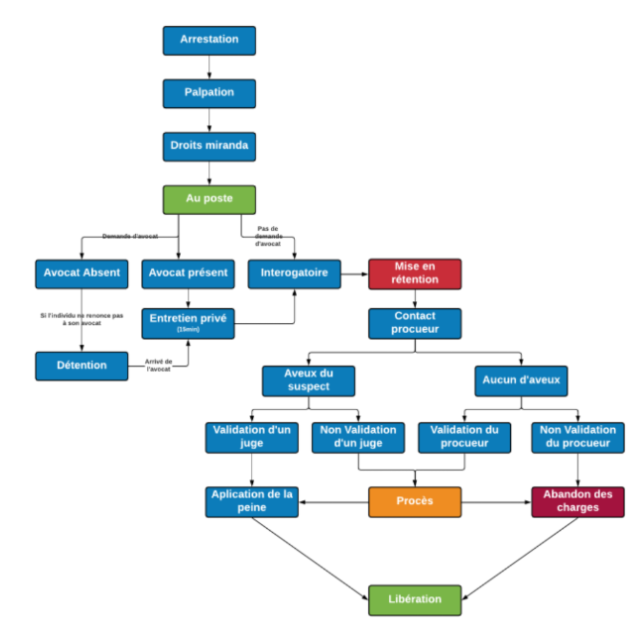
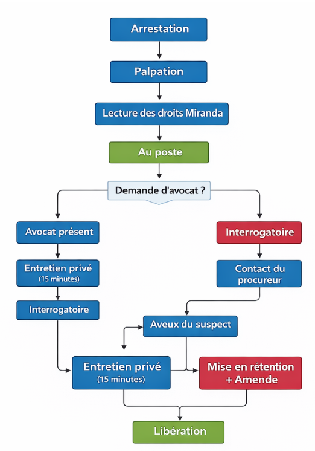

ÉTAT DE SAN ANDREAS
Sont pénalement responsables :
Ne sont pas pénalement responsables :
Un complice d'un crime, d'un délit, ou d'une infraction est passible des mêmes poursuites et peines que l'auteur principal.
Est considéré comme complice d'un crime ou d'un délit :
La tentative de commettre une infraction est punie de la même manière que l'infraction elle-même.
La tentative est établie dès qu'un acte de commencement d'exécution a été réalisé, mais que l'infraction n'a été interrompue ou a échoué que par des circonstances indépendantes de la volonté de l'auteur.
Le pouvoir de police permet aux agents habilités de restreindre les libertés individuelles et d'influencer le comportement des personnes pour garantir la sécurité, la santé, la moralité et le bien-être général.
Les agents de police ont le droit d'entrer dans un commerce dans le cadre de l'application de la loi, mais ils ne peuvent pas procéder à une fouille des lieux.
Toute preuve obtenue en violation des droits constitutionnels (fouille illégale, absence de mandat valide) est irrecevable en justice (Exclusionary Rule). Les preuves recueillies par des citoyens sans pouvoir de police ne sont recevables que si elles n'ont pas été obtenues par la commission d'un crime.
Les officiers de police peuvent procéder à une arrestation s'ils ont une suspicion raisonnable, fondée sur des éléments rationnels, que le suspect est sur le point de commettre, est en train de commettre, ou a déjà commis une infraction. Une arrestation peut être effectuée immédiatement sur la base de cette suspicion. Dans le cadre d'une enquête, un mandat d'arrêt obtenu auprès d'un juge est nécessaire si l'arrestation ne peut être immédiate.
Les services de police peuvent saisir tout objet raisonnablement considéré comme preuve de la commission d'une infraction, ainsi que les effets illégaux liés à celle-ci, comme les armes illégales ou les stupéfiants. Ils doivent conserver les preuves dans l'état où elles ont été trouvées. Cependant, ils peuvent réaliser de petits prélèvements ou des manipulations techniques qui n'altèrent pas leur qualité pour les besoins de l'enquête.
Les officiers de police, chargés de maintenir l'ordre public et de prévenir les abus contre les biens, les personnes et l'État, peuvent donner des injonctions aux personnes circulant ou stationnant sur la voie publique ou à proximité de lieux sensibles, ainsi qu'à celles qui sont raisonnablement suspectées ou accusées. Ces injonctions doivent être proportionnées et peuvent être émises par des moyens visuels (comme un uniforme, un badge, un véhicule sérigraphié ou un gyrophare) ou sonores (comme une sirène ou une annonce), ou tout autre moyen approprié. Les personnes visées doivent raisonnablement croire que ces injonctions proviennent d'un véritable agent de police.
Les officiers de police, qu'ils soient fédéraux, locaux ou municipaux, qui, sous couvert d'autorité, privent un citoyen de ses droits constitutionnels ou font usage d'une force excessive s'exposent à des poursuites pénales et administratives.
Les agents de la paix peuvent utiliser une force objectivement raisonnable pour effectuer une arrestation, empêcher une évasion ou surmonter une résistance.


Les peines de rétention sont classées par importance.
| Niveau de rétention | Lieu | Niveau de délit | Sur décision | Gestion |
|---|---|---|---|---|
| GAV | Poste de Police | Délit mineur | Force de police | Force de police |
| ATU | Hôpital (chambre sécurisée) | Délit majeur | Force de police + Médical | Force de police |
| TIG (Travaux d'Intérêts Générales) | Poste de Police | Délit mineur et/ou majeur | Bureau du Procureur Général et du Juge | Département de la Justice |
| Bracelet électronique | Poste de police | Délit majeur et Crimes | Juge | Force de police et Juge |
| UP | Pénitencier de Bolingbroke | Crimes | Justice | Département de la Justice et Juge |
Les agents de police peuvent procéder à l'arrestation d'un individu dès qu'ils ont une suspicion raisonnable que celui-ci est en train de commettre, est sur le point de commettre, ou a déjà commis une infraction pénale. Cette suspicion raisonnable doit être établie sur des éléments rationnels et ne peut pas être influencée par la race, le sexe, l'orientation sexuelle, les antécédents judiciaires, la religion, les opinions ou la situation sociale réelle ou supposée de l'individu. L'arrestation doit être effectuée immédiatement lorsque l'individu est privé de sa liberté de mouvement. Si ce n'est pas le cas, un mandat d'arrêt est requis.
Après son arrestation, le suspect doit être informé dans les plus brefs délais des faits qui lui sont reprochés, de son droit au silence, du fait que tout ce qu'il dira ou fera pourra être utilisé contre lui, de son droit à une visite médicale, et de son droit à un avocat de son choix ou d'un avocat commis d'office. Si le suspect avoue sans avoir été préalablement informé de ces droits, ses déclarations ne pourront pas être utilisées contre lui, conformément à l'arrêt Miranda contre Arizona (obligation de citer les droits constitutionnels). La lecture des droits de Miranda est également obligatoire lors de la rétention ou de la détention du suspect. En cas de non-respect, cela peut entraîner un vice de procédure et la possible annulation des charges ainsi que la libération du suspect.
Les droits Miranda doivent être répétés jusqu'à trois fois si le suspect ne les comprend pas. Si, après la troisième répétition, le suspect ne comprend toujours pas, l'agent de police doit alors faire rédiger et signer une déclaration des droits par le suspect. En cas de refus, cela sera considéré comme un refus de droits.
Le suspect a également le droit de prévenir un membre de sa famille ou son employeur par téléphone. Il a le droit d'être assisté par son avocat lors des interrogatoires. Cependant, dans les affaires liées au trafic de stupéfiants ou d'armes, l'agent de police peut refuser de permettre au suspect de prévenir un membre de sa famille ou son employeur, dans le but de protéger l'enquête. Un procès-verbal motivé doit être rédigé et joint au dossier de mise en accusation.
Les droits Miranda doivent être communiqués comme suit :
« Mme / Mr, vous êtes placé en état d'arrestation pour [faits reprochés]. Vous avez le droit de garder le silence. Si vous choisissez de ne pas exercer ce droit, tout ce que vous direz pourra être utilisé contre vous devant un tribunal. Vous avez également le droit à la présence d’un avocat lors de l’interrogatoire. Si vous n'avez pas les moyens de vous en procurer un, un avocat vous sera fourni gratuitement. Par ailleurs, vous pouvez choisir à tout moment de ne pas répondre aux questions ou de ne faire aucune déclaration. Une fois en détention, vous avez droit à des vivres et à des soins médicaux. Avec ces droits en tête, Me/M, avez-vous compris vos droits et souhaitez-vous faire une déclaration ? »
Un officier de police dispose de 15 minutes après l'arrivée au poste pour notifier les droits Miranda à une personne en état d'arrestation (cf article 1-1.8 du Code Civil).
Pour toute infraction ou délit mineur, la durée maximale de la garde à vue est fixée à 30 minutes.
La peine de prison (ou incarceration) constitue la sanction finale prononcée à l'encontre d'un condamné. Elle est exécutée au pénitencier de Bolingbroke.
Pour l'ensemble des délits majeurs et crimes, le cumul des peines d'incarcération ne peut excéder un maximum de 50 minutes.
La peine d'incarcération est indépendante du temps passé en Garde à Vue. Elle commence dès l'admission du condamné dans l'enceinte pénitentiaire.
Le Procureur Général est le chef du Département de la Justice (DOJ). Il est chargé de mettre en œuvre l'action publique, de diriger les enquêtes et les poursuites pénales sur le territoire de l'État de San Andreas.
Le Procureur Général est chargé, en tant qu'avocat, de toutes les questions juridiques qui intéressent l'État. Il se présente à la Cour Supérieure et poursuit ou défend toutes les causes auxquelles l'État, ou tout agent de l'État, est partie en sa qualité officielle.
Si le Procureur Général refuse de défendre la validité d'un acte législatif dans une action, il doit néanmoins faire appel ou demander la révision de tout jugement déterminant que l'acte est invalide, si cela est nécessaire pour préserver la qualité de l'État à défendre la loi et veiller à ce que les lois soient correctement appliquées.
Le Procureur Général peut émettre des directives et des injonctions dans l'exercice de ses fonctions, lesquelles doivent être suivies par les services de police. Il peut solliciter auprès de la Cour Supérieure des ordonnances (injonctions) pour faire cesser des pratiques illégales ou forcer le respect de la loi.
Toute personne ne payant pas en temps utile une pénalité imposée par l'État dans une affaire poursuivie par le Procureur Général est tenue de payer, en sus, des intérêts, des honoraires d'avocat raisonnables et les frais de recouvrement.
Le Procureur Général engage et poursuit, au nom de l'État, des actions en annulation de tous les transferts de propriété effectués frauduleusement par des débiteurs judiciaires.
Le Procureur Général est nommé par le Gouverneur. Son mandat est lié à celui du Gouverneur, sauf en cas de démission, d'incapacité ou de destitution.
Le Procureur Général peut être démis de ses fonctions pour faute grave, manquement à ses devoirs constitutionnels ou condamnation pénale.
Le Procureur Général ou tout procureur adjoint ou de district peut émettre des sanctions à l'encontre des agents de police en cas de manquement au Code de déontologie, d'insubordination, de non-respect des procédures pénales ou de manque de professionnalisme. Ces sanctions doivent être établies sur des éléments fondés et non sur des suspicions.
Le tribunal peut nommer un séquestre sur requête du Procureur Général s'il est établi qu'il existe une probabilité raisonnable que le défendeur ait obtenu des biens par des moyens illégaux et que la mise sous séquestre faciliterait la restitution.
(1) Tous les biens sous le contrôle du séquestre sont sous la garde du tribunal. L'État et le Procureur Général ne sont pas responsables des frais ou honoraires du séquestre, sauf disposition contraire par contrat écrit.
(2) Nul ne doit entraver l'exercice des fonctions du séquestre sous peine de sanctions.
(3) Aucune action en justice (saisie, privilège, exécution) ne peut être intentée contre le séquestre ou les biens concernés sans l'approbation préalable du tribunal après avis au Procureur Général. Toute procédure engagée sans cet accord est nulle.
Le tribunal peut, avec son consentement, nommer le Procureur Général pour servir lui-même de séquestre ou d'avocat du séquestre.
Si la nomination d'un séquestre n'est pas demandée mais que le caractère illégal de l'obtention des biens est probable, le tribunal rendra toute ordonnance nécessaire pour garantir que le défendeur ne transfère ni ne grève les biens pouvant servir à satisfaire le jugement.
Ces dispositions sont cumulatives à toutes les autres lois en vigueur. L'invalidité d'une disposition de cet article n'affecte pas la validité des autres dispositions qui peuvent être mises en œuvre séparément.
Le Special Agent est mandaté par le Congrès des Etats-Unis d’Amérique pour assurer la protection intégrale des membres du San Andreas Department of Justice, ainsi que des conjoints respectifs du Président de la Cour Supérieure et du Procureur Général.
Le "Protection Program" est un dispositif de sûreté étatique visant à sécuriser les membres du DOJ ainsi que leurs habitations. L'adhésion à ce programme est obligatoire et formalisée par la signature d'un contrat lors de la passation de pouvoir.
Le Special Agent est l'autorité unique chargée de l'exécution et du strict respect des protocoles du Protection Program. Nul ne peut entraver son action dans l'exercice de cette mission.
Le United States Special Agent s'engage à maintenir la plus stricte confidentialité concernant toutes les informations sensibles obtenues dans le cadre du présent Protection Program. Aucune information relative à l’autorité protégée ne peut être divulguée à un tiers sans autorisation préalable.
Le United States Special Agent s'engage à fournir des services de protection avec le plus haut niveau de professionnalisme et de compétence, en accordant une priorité absolue à la sécurité et au bien-être de l’autorité.
Le United States Special Agent s'engage à exercer ses fonctions avec la discrétion nécessaire afin de minimiser les perturbations dans la vie quotidienne de l’autorité et de son entourage, sans toutefois compromettre l'efficacité du dispositif de sécurité.
Le United States Special Agent est tenu de respecter scrupuleusement tous les protocoles de sécurité établis. Il est responsable de la mise en œuvre tactique des mesures de protection rapprochée.
Le Special Agent Bureau s'engage à fournir une formation continue à son personnel chargé de la protection, garantissant la maîtrise des meilleures pratiques de sécurité et des techniques d'intervention d'élite.
L’autorité s'engage à collaborer pleinement avec le United States Special Agent et à suivre strictement ses directives en matière de sécurité et de protection personnelle.
L'autorité a l'obligation d'informer le United States Special Agent de tous ses déplacements prévus à l'avance, afin de permettre une planification stratégique et tactique de la sécurité.
L'autorité respectera l'intégralité des protocoles de sécurité recommandés par le United States Special Agent, incluant la sécurité des lieux, des communications et l'accès aux périmètres sécurisés.
L'autorité s'engage à ne divulguer aucune information sensible concernant son "Protection Program" ou les activités opérationnelles du United States Special Agent à des tiers sans autorisation préalable.
En cas de menace potentielle ou de situation d'urgence, l'autorité doit coopérer sans réserve avec le United States Special Agent pour garantir sa sécurité et celle de son entourage, conformément aux protocoles d'évacuation.
Tout membre du Department of Justice ne peut refuser la protection du Special Agent, et cela, peu importent les circonstances ou les préférences personnelles.
Le United States Special Agent est en droit de connaître toute information personnelle et médicale de l'autorité pour son bien et celui de ses fréquentations, afin de prévenir tout risque de compromission.
Dans le cadre d'un déplacement personnel sans lien avec ses fonctions au sein du Department Of Justice, l'autorité peut circuler seule. Toutefois, elle s'engage à accepter d'être suivie à distance par le Special Agent si cela est jugé nécessaire par le Bureau.
Note : Cet article ne s'applique ni au Président de la Cour Supérieur, ni aux Juges.
Une autorité peut demander la fin de son contrat de protection. Cette demande doit impérativement faire l'objet d'une étude devant une Commission Mixte Paritaire de sécurité.
Dans le cas où le contrat est suspendu ou rompu, l'autorité concernée perd définitivement la possibilité de solliciter une quelconque protection, qu'elle provienne de services publics ou d’agences de sécurité privées. L'autorité assume alors seule l'intégralité des risques liés à sa fonction.
Les agents des services de police municipaux, étatiques et fédéraux doivent respecter la procédure pénale.
Le non-respect de la procédure pénale constitue un abus de pouvoir, entraînant la nullité des actes en résultant et exposant le responsable à des poursuites pénales.
Les agents de police doivent constater les infractions à la loi pénale, rassembler les preuves et rechercher les auteurs de ces infractions.
Lorsqu'une suspicion raisonnable indique qu'un individu a commis, est en train de commettre, ou pourrait commettre un délit ou un crime, les agents de police ont le droit de procéder au contrôle, à la palpation et à toute vérification nécessaire pour établir les faits. Les officiers de police peuvent également effectuer ces contrôles en cas de situations exceptionnelles, telles qu'un niveau de sécurité accru ou une commission rogatoire émanant du bureau du Procureur.
Les agents de police peuvent infliger une amende et procéder à une rétention pour les délits mineurs constatés de manière flagrante. Pour les délits majeurs ou les crimes, une mise en accusation est nécessaire. Après paiement de l'amende, le contrevenant peut contester la procédure devant le Procureur Général de San Andreas. Si la contestation est rejetée ou non traitée dans un délai raisonnable, le contrevenant peut directement saisir la Cour supérieure de San Andreas pour annulation.
Les agents de police peuvent accorder une libération sous caution dans le cadre d'une affaire délictuelle, mais non criminelle. La caution doit représenter 50% de la peine maximale encourue par le prévenu. Les mesures restrictives sont détaillées dans le Titre IV, Chapitre 3 du présent code.
L’entrapment est qualifié de provocation policière, toute action intentionnelle d’un agent des forces de l’ordre consistant à inciter, pousser ou contraindre une personne à commettre une infraction qu’elle n’aurait pas commise sans cette intervention. Toute infraction ainsi provoquée est considérée comme nulle, et les preuves obtenues par ce procédé sont frappées de nullité. Cette pratique constitue une violation des principes d’équité et de loyauté des procédures pénales, et ouvre droit à un moyen de défense pour la personne poursuivie.
Les juges étatiques de la Cour de San Andreas sont nommés par le Procureur Général de l’État de San Andreas.
Le juge est un magistrat indépendant et inamovible, qui exerce ses fonctions avec bonne foi et impartialité.
La Cour de justice est compétente pour décider des demandes effectuées par le bureau du Procureur, notamment pour les accords de plaider-coupable, les demandes de libération sous caution et d'autres mesures légales.
Le juge a pleine autorité en matière judiciaire. Il applique les sanctions qu'il juge appropriées. La décision d'un juge est finale, sauf en cas d'appel. Dans ce cas, un autre juge sera nommé pour réexaminer l'affaire. Les constatations et décisions du premier jugement ne seront pas considérées.
Toute personne détenue a le droit de déposer une requête d'Habeas Corpus pour contester la légalité de sa détention. Si le juge estime la détention illégale (absence de charges, erreur d'identité, procédure viciée), il doit ordonner la libération immédiate.
Les injonctions émises par un magistrat de la Cour Supérieure doivent être respectées et appliquées par tous les services de police.
Distinction entre Mandat d'arrêt et la convocation :
L'article prévoit deux vecteurs distincts pour assurer la comparution du suspect devant la juridiction :
Obligation de Procédure de réservation :
L'usage de l'assignation ne dispense pas des mesures d'identification judiciaire :
Limitations impératives à la convocation :
Le Ministère Public (DOJ) est dans l'obligation de requérir un mandat d'arrêt (et non une convocation) si l'une des sept circonstances suivantes est caractérisée :
Sanctions du Défaut de comparution :
L'inexécution de l'ordre de comparution contenu dans la convocation entraîne les conséquences suivantes :
Dès que l'accusation est déposée, le défendeur doit comparaître devant un juge pour :
Si le suspect est détenu, cette comparution doit avoir lieu sous 48 heures (hors weekends).
Pour les délits majeurs (Felonies), une audience doit se tenir devant un juge (généralement sous 10 jours après la comparution initiale) pour déterminer s'il existe une cause probable suffisante pour justifier un procès. À défaut, les charges sont abandonnées.
Le Ministère Public (DOJ) doit communiquer à la défense, au moins 15 jours avant toute audience de jugement, l'intégralité des pièces à charge (rapports de police, vidéos, témoignages). Toute preuve non communiquée pourra être déclarée irrecevable.
La profession d’avocat est régie par le Barreau de San Andreas. Le bâtonnier est élu par ses pairs pour un mandat de trois mois, par un scrutin uninominal à un tour. Le bâtonnier est responsable de l'inscription des avocats au Barreau de San Andreas.
Les communications entre un avocat et son client sont couvertes par le secret professionnel absolu. Aucune autorité ne peut forcer la divulgation de ces échanges, sauf si cela sert à planifier un futur crime.
Alinéa 1 : Nul ne peut être inscrit au Barreau de San Andreas s'il ne présente des garanties de moralité et d'honorabilité incompatibles avec l'exercice de la profession d'avocat.
Alinéa 2 : L'existence d'un casier judiciaire pour des délits mineurs (Misdemeanors) ne constitue pas un motif de refus automatique, sous réserve que le candidat prouve sa réhabilitation et son intégrité actuelle devant le Bâtonnier.
Alinéa 3 : Par dérogation stricte, l'accès aux fonctions de Procureur ou de substitut du Procureur Général est interdit à tout citoyen ayant fait l'objet d'une condamnation pour un crime majeur (Felony) ou un délit de corruption, afin de préserver la crédibilité de l'action publique.
Alinéa 4 : Toute omission volontaire d'un antécédent judiciaire lors de la candidature est considérée comme un acte de parjure et entraîne une radiation définitive et immédiate du Barreau.
En cas de carence ou d’indisponibilité constatée du Bâtonnier de l’Ordre et d'un Juge de la Cour Supérieure, le Procureur Général, garant de la discipline de l'audience et de la probité judiciaire, exerce par intérim l'autorité ordinale. À ce titre, il peut prononcer toute mesure disciplinaire ou suspension d'exercice à l'encontre d'un avocat dont le comportement entrave la manifestation de la vérité ou l'ordre public.